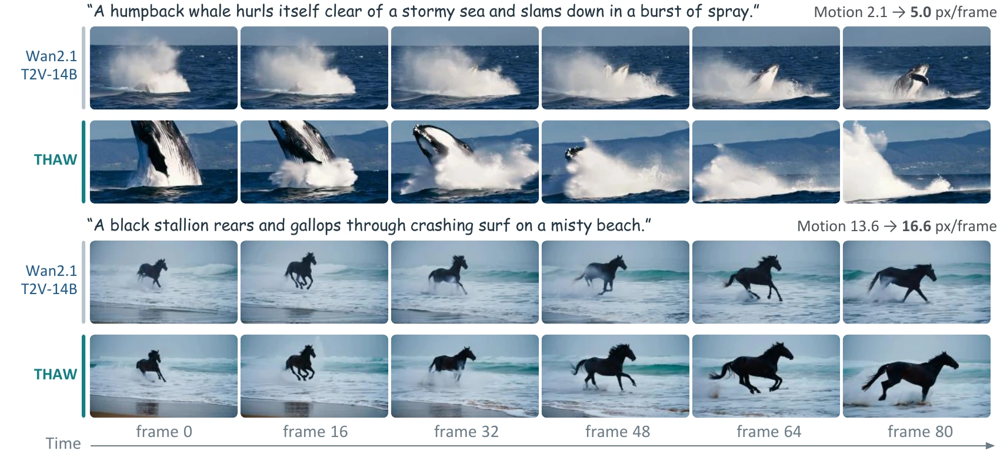
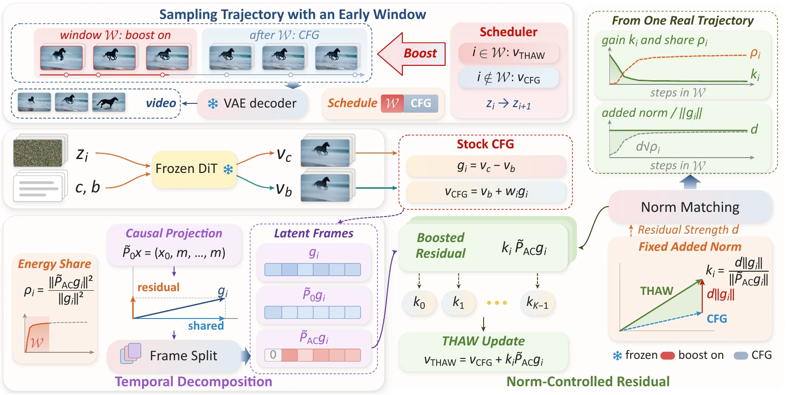

Breaching whale
A humpback whale hurls itself clear of a stormy sea and slams down in a burst of spray.
Early Temporal Guidance Unfreezes Motion in Video Diffusion Models
1 The University of Sydney2 Indiana University
A humpback whale hurls itself clear of a stormy sea and slams down in a burst of spray.
Video diffusion models can render convincing frames while failing to produce the requested action. Increasing classifier-free guidance (CFG) can strengthen motion, but also saturates and shifts colors. Scalar CFG assigns the same coefficient to the averaged and frame-varying components of its prediction difference, limiting independent control of temporal variation. THAW, Temporal Harmonic Amplification during Warm-up, retains stock CFG and adds a separately weighted residual during an initial denoising window. Its dose specifies the added norm relative to the current CFG difference, giving the extra guidance a consistent relative budget across sampling steps. THAW is training-free and reuses CFG's two model predictions with an unchanged network evaluation count. It improves cost-matched motion over scalar and scheduled CFG on five video models, with positive point estimates against existing guidance methods on three of them. On VBench, THAW raises dynamic degree by about 14 to 15 points over stock CFG while increasing total scores on a different set of three models.
Both pairs use Wan2.1-T2V-14B with CFG 5. THAW adds a causal temporal residual at strength 2 during the first 40% of the same sampling schedule.
A black stallion rears and gallops through crashing surf on a misty beach.

Split the CFG prediction difference into a frame-shared component and a residual. Normalize the residual to a fraction of the difference norm and add it during an initial window.

Install the video dependencies on a CUDA system with Python 3.11. Paired mode generates both stock CFG and THAW from the same initial noise.
python -m pip install -e '.[video]'
thaw --model wan-1.3b --paired \
--prompt "A red kite loops over an open field." \
--output outputs/kite.mp4